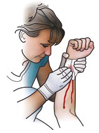
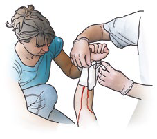
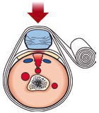
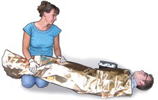
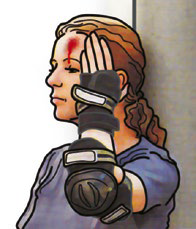
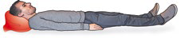
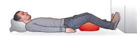
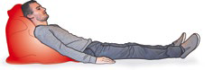

Blutungen, Kopf-, Bauch- und Brustkorbverletzungen
Blutungen verursachen – vor allem wenn sie stark sind – sowohl bei den Betroffenen als auch bei den Ersthelfern oder Ersthelferinnen eine »schockartige« Wirkung. In der Tat kann eine heftige Blutung sehr bedrohlich wirken.
Der Verlust von einem Liter Blut kann bei Erwachsenen zum Schock führen. Deshalb ist die schnelle und sachgemäße Blutstillung eine der vorrangigen Aufgaben der Ersten Hilfe.
Dieses Kapitel macht Sie außerdem mit den Maßnahmen bei schweren Kopf-, Bauch- und Brustkorbverletzungen vertraut. In solch schweren Fällen muss rechtzeitig der Rettungsdienst alarmiert werden.
Starke Blutungen
Eine heftige äußere Verletzung kann sehr stark bluten. Für Verletze und Helferinnen oder Helfer bedeutet das eine belastende Ausnahmesituation. Die intensive Farbe des Blutes wirkt zusätzlich bedrohlich.
Symptome
 Zu erkennen ist, dass Blut aus einer offenen Wunde strömt.
Zu erkennen ist, dass Blut aus einer offenen Wunde strömt.
Bei Verletzung einer Arterie kann das Blut pulsierend austreten.
 Manchmal liegt die betroffene Person in einer Blutlache.
Manchmal liegt die betroffene Person in einer Blutlache.
 Die verletzte Person ist meist blutverschmiert, sie kann Blutflecken in ihrer Kleidung haben.
Die verletzte Person ist meist blutverschmiert, sie kann Blutflecken in ihrer Kleidung haben.
 Sie ist meist blass, ihr ist kalt und sie kann weitere Anzeichen eines Schocks zeigen (siehe hier).
Sie ist meist blass, ihr ist kalt und sie kann weitere Anzeichen eines Schocks zeigen (siehe hier).
So helfen Sie richtig

 Es ist vorteilhaft, wenn die verletzte Person liegt. Bei der Versorgung sollten Sie Einmalhandschuhe aus dem Verbandkasten tragen.
Es ist vorteilhaft, wenn die verletzte Person liegt. Bei der Versorgung sollten Sie Einmalhandschuhe aus dem Verbandkasten tragen.
 Durch Hochhalten der Extremität wird die starke Blutung bereits verringert.
Durch Hochhalten der Extremität wird die starke Blutung bereits verringert.
 Bei allen stark blutenden Wunden pressen Sie als erste Maßnahme ein sauberes Tuch oder einfach die flache Hand auf die Wunde, um die Blutung zu stoppen.
Bei allen stark blutenden Wunden pressen Sie als erste Maßnahme ein sauberes Tuch oder einfach die flache Hand auf die Wunde, um die Blutung zu stoppen.

 Mit beispielsweise 2 Verbandpäckchen aus einem Verbandkasten wickeln Sie einen Druckverband auf die Wunde.
Mit beispielsweise 2 Verbandpäckchen aus einem Verbandkasten wickeln Sie einen Druckverband auf die Wunde.
 Legen Sie – wie bei einem normalen Verband – die Wundauflage des 1. Verbandpäckchens auf die Wunde. Das vorher aufgepresste Tuch kann in den Verband einbezogen werden.
Legen Sie – wie bei einem normalen Verband – die Wundauflage des 1. Verbandpäckchens auf die Wunde. Das vorher aufgepresste Tuch kann in den Verband einbezogen werden.

 Das 2. Verbandpäckchen bleibt in der Verpackung und wird als Druckpolster unmittelbar auf die Wunde gewickelt.
Das 2. Verbandpäckchen bleibt in der Verpackung und wird als Druckpolster unmittelbar auf die Wunde gewickelt.
 Das Aufpressen auf die Wunde wird dadurch ersetzt.
Das Aufpressen auf die Wunde wird dadurch ersetzt.
 Spätestens jetzt muss ein Notruf erfolgen. Alarmieren Sie den Rettungsdienst.
Spätestens jetzt muss ein Notruf erfolgen. Alarmieren Sie den Rettungsdienst.
Hinweis: Ein Druckverband lässt sich an vielen Körperbereichen anlegen. Blutungen können so zuverlässig gestillt werden. Es ist aber zu beachten, dass der verbundene Bereich möglichst nicht mehr bewegt wird und möglichst weiter erhöht gelagert wird.

 Die betroffene Person mit der Rettungsdecke aus dem Verbandkasten warm halten. Die Decke auch unter die verletzte Person schieben.
Die betroffene Person mit der Rettungsdecke aus dem Verbandkasten warm halten. Die Decke auch unter die verletzte Person schieben.
 Die Beine können etwas erhöht gelagert werden.
Die Beine können etwas erhöht gelagert werden.
 Die verletzte Person bis zum Eintreffen des Rettungsdienstes betreuen.
Die verletzte Person bis zum Eintreffen des Rettungsdienstes betreuen.
Sollte ein Druckverband am Arm oder Bein einmal sehr stark durchbluten, üben Sie mit Ihren Händen (Handschuhe tragen) Druck auf die Wunde aus, bis der Rettungsdienst eintrifft und die weitere Versorgung übernimmt. Leichtes Durchbluten (Verfärbung des Verbandes) ist nicht weiter schlimm.
Ab einem Blutverlust von ca. 15 bis 20 Prozent (ca. ein Liter bei einem Erwachsenen) ist mit einem Schock zu rechnen (siehe hier). Das bedeutet Lebensgefahr (Verbluten) für die betroffene Person.
Blutungen am Kopf
Das Gewebe am Kopf ist intensiv durchblutet. Daher bluten Verletzungen am Kopf immer relativ stark. Da die verletzten Personen selbst den Bereich nicht einsehen können versuchen sie den Bereich zu ertasten und verschmieren dabei das Blut. Das sieht dann oft schlimmer aus als es ist.
Symptome
 Es blutet aus einer offenen Wunde am Kopf eines stark blutverschmierten Verletzten.
Es blutet aus einer offenen Wunde am Kopf eines stark blutverschmierten Verletzten.
 Achtung: An Begleitverletzungen (z. B. Gehirnerschütterung, Nasenbeinbruch usw.) denken.
Achtung: An Begleitverletzungen (z. B. Gehirnerschütterung, Nasenbeinbruch usw.) denken.
So helfen Sie richtig
 Es ist vorteilhaft, wenn die verletzte Person sitzt. Tragen Sie bei der Versorgung Einmalhandschuhe aus dem Verbandkasten.
Es ist vorteilhaft, wenn die verletzte Person sitzt. Tragen Sie bei der Versorgung Einmalhandschuhe aus dem Verbandkasten.
 Drücken Sie Verbandmaterial, das Sie aus der Verpackung genommen haben, auf die Wunde. Das kann die verletzte Person ggf. auch selbst. Den Druck müssen Sie gegebenenfalls bis zum Eintreffen des Rettungsdienstes beibehalten.
Drücken Sie Verbandmaterial, das Sie aus der Verpackung genommen haben, auf die Wunde. Das kann die verletzte Person ggf. auch selbst. Den Druck müssen Sie gegebenenfalls bis zum Eintreffen des Rettungsdienstes beibehalten.
 Spätestens jetzt muss ein Notruf erfolgen. Alarmieren Sie den Rettungsdienst.
Spätestens jetzt muss ein Notruf erfolgen. Alarmieren Sie den Rettungsdienst.
 Wenn die Lage der Verletzung einen Druckverband erlaubt, können Sie diesen wie beschrieben anlegen. Es ist darauf zu achten, dass die Atemwege frei bleiben bzw. die Atmung nicht behindert ist.
Wenn die Lage der Verletzung einen Druckverband erlaubt, können Sie diesen wie beschrieben anlegen. Es ist darauf zu achten, dass die Atemwege frei bleiben bzw. die Atmung nicht behindert ist.
 Die verletzte Person wird entsprechend ihrer Begleitverletzungen gelagert, z. B. bei einer Gehirnerschütterung mit erhöhtem Kopf. Bei Bewusstlosigkeit ist die Seitenlage erforderlich.
Die verletzte Person wird entsprechend ihrer Begleitverletzungen gelagert, z. B. bei einer Gehirnerschütterung mit erhöhtem Kopf. Bei Bewusstlosigkeit ist die Seitenlage erforderlich.
 Die verletzte Person unbedingt warm halten, z. B. mit der Rettungsdecke aus dem Verbandkasten.
Die verletzte Person unbedingt warm halten, z. B. mit der Rettungsdecke aus dem Verbandkasten.
 Die verletzte Person bis zum Eintreffen des Rettungsdienstes betreuen.
Die verletzte Person bis zum Eintreffen des Rettungsdienstes betreuen.
Amputationsverletzungen
Unfälle, bei denen es zur Abtrennung (Amputation) von Körperteilen (z. B. einem Finger oder einer ganzen Hand) gekommen ist, stellen für die verletzte Person und die Helferinnen oder Helfer eine dramatisch belastende Situation dar.
Symptome
 Es blutet – ggf. stark – aus einer offenen Wunde.
Es blutet – ggf. stark – aus einer offenen Wunde.
 Die verletzte Person klagt über starke Schmerzen.
Die verletzte Person klagt über starke Schmerzen.
 Sie sieht blass aus und zeigt ggf. weitere Anzeichen eines Schocks.
Sie sieht blass aus und zeigt ggf. weitere Anzeichen eines Schocks.
So helfen Sie richtig
 Zuerst muss die betroffene Person beruhigt und versorgt werden.
Zuerst muss die betroffene Person beruhigt und versorgt werden.
 Die betroffene Person soll liegen.
Die betroffene Person soll liegen.
 Stillen Sie zunächst die Blutung, indem Sie Verbandmaterial auf die Wunde pressen bis der Rettungsdienst eintrifft. Ggf. kann auch ein Druckverband angelegt werden.
Stillen Sie zunächst die Blutung, indem Sie Verbandmaterial auf die Wunde pressen bis der Rettungsdienst eintrifft. Ggf. kann auch ein Druckverband angelegt werden.
 Tragen Sie bei der Versorgung Einmalhandschuhe aus dem Verbandkasten.
Tragen Sie bei der Versorgung Einmalhandschuhe aus dem Verbandkasten.
 Spätestens jetzt muss ein Notruf erfolgen. Alarmieren Sie den Rettungsdienst.
Spätestens jetzt muss ein Notruf erfolgen. Alarmieren Sie den Rettungsdienst.
 Kümmern Sie sich um die verletzte Person. Lassen Sie sie nicht allein, psychische Betreuung ist besonders wichtig.
Kümmern Sie sich um die verletzte Person. Lassen Sie sie nicht allein, psychische Betreuung ist besonders wichtig.
 Decken Sie sie zu (Rettungsdecke).
Decken Sie sie zu (Rettungsdecke).
 Lagern Sie die Beine etwas erhöht. (siehe hier)
Lagern Sie die Beine etwas erhöht. (siehe hier)
 Versorgen Sie den abgetrennten Körperteil (Amputat):
Versorgen Sie den abgetrennten Körperteil (Amputat):
Das Amputat soll nicht gesäubert werden, es darf auch nicht mit Wasser in Berührung kommen. Wickeln Sie das Amputat in ein sauberes Tuch (am besten in ein steriles Verbandtuch aus dem Verbandkasten).
 Übergeben Sie das Amputat dem Rettungsdienst. Dieser wird es sachgerecht kühlen und in die Klinik mitnehmen.
Übergeben Sie das Amputat dem Rettungsdienst. Dieser wird es sachgerecht kühlen und in die Klinik mitnehmen.
Wichtig ist bei diesen Unfällen die Reihenfolge der Hilfe. Zuerst muss die verunglückte Person versorgt werden, erst danach wird das Amputat versorgt.
Abbindungen sind zu vermeiden; sie sind überflüssig und für die spätere medizinische Versorgung der verletzten Person von Nachteil.
Als Amputat gelten nicht nur komplett abgetrennte Körperteile, sondern auch abgetragene Haut- und Gewebestücke. Auch diese Amputate können ggf. replantiert werden. Daher müssen auch diese Amputate entsprechend gesichert, versorgt und mit der verletzten Person in die Klinik gebracht werden.
Ausgeschlagene Zähne
Aus dem Kiefer getrennte Zähne können replantiert werden. Voraussetzung ist, dass der Zahn in einem sauberen Tuch, z. B. in einem Verbandtuch aus dem Verbandkasten feucht gehalten und nicht an der Wurzel berührt wird. Aufbewahren kann man die Zähne am besten in einer Dentalrettungsbox (Apotheke). Steht diese nicht (sofort) zur Verfügung, sollte der Zahn kurzzeitig in H-Milch gelagert werden. Die meisten anderen Flüssigkeiten sind ungeeignet. Die betroffene Person muss unverzüglich in zahnärztliche Behandlung.
Kopfverletzung
Eine Gewalteinwirkung auf den Kopf kann Auswirkungen auf das Gehirn im Innern des Schädels haben. Je nach Schwere der Schädigung des Gehirns kann eine unterschiedlich tiefe und unterschiedlich lange dauernde Bewusstlosigkeit (bis zum Koma) auftreten.
Die Hilfeleistung bei Bewusstlosigkeit ist hier beschrieben. Häufig haben Betroffene neben den äußeren Wunden Anzeichen einer Gehirnerschütterung.
Symptome

 Betroffene können für kurze Zeit, oft nur für wenige Sekunden, das Bewusstsein verlieren, was von Helfenden oft nicht bemerkt wird. Betroffene geben an, "dass ihnen schwarz vor Augen war".
Betroffene können für kurze Zeit, oft nur für wenige Sekunden, das Bewusstsein verlieren, was von Helfenden oft nicht bemerkt wird. Betroffene geben an, "dass ihnen schwarz vor Augen war".
 Sie haben Lücken in der Erinnerung. Sie können sich nicht an das Unfallgeschehen erinnern, wissen z. B. nicht, welcher Wochentag ist und wirken desorientiert.
Sie haben Lücken in der Erinnerung. Sie können sich nicht an das Unfallgeschehen erinnern, wissen z. B. nicht, welcher Wochentag ist und wirken desorientiert.
 Sie klagen über Kopfschmerzen und Schwindel.
Sie klagen über Kopfschmerzen und Schwindel.
 Ihnen ist übel, manchmal müssen sie sich übergeben (Brechreiz).
Ihnen ist übel, manchmal müssen sie sich übergeben (Brechreiz).
Achtung: Nicht die bedrohlich erscheinenden äußeren Wunden stellen das größte Problem dar, sondern die Schädigung des Gehirns mit Gehirnerschütterung und Bewusstlosigkeit.
So helfen Sie richtig

 Ist die betroffene Person bei Bewusstsein, lagern Sie sie mit leicht erhöhtem Oberkörper/Kopf.
Ist die betroffene Person bei Bewusstsein, lagern Sie sie mit leicht erhöhtem Oberkörper/Kopf.
 Notruf/Alarmieren Sie unabhängig von der Schwere der Anzeichen den Rettungsdienst.
Notruf/Alarmieren Sie unabhängig von der Schwere der Anzeichen den Rettungsdienst.
 Verbinden Sie jetzt auch die äußeren Verletzungen am Kopf.
Verbinden Sie jetzt auch die äußeren Verletzungen am Kopf.
 Halten Sie die betroffene Person warm (zudecken z. B. mit der Rettungsdecke).
Halten Sie die betroffene Person warm (zudecken z. B. mit der Rettungsdecke).
 Lassen Sie die betroffene Person nicht allein, sondern unter ständiger Beobachtung.
Lassen Sie die betroffene Person nicht allein, sondern unter ständiger Beobachtung.
 Helfen Sie ihr, wenn sie sich übergeben muss.
Helfen Sie ihr, wenn sie sich übergeben muss.
Rechnen Sie bei schweren Kopfverletzungen immer mit Komplikationen, z. B. Krämpfen sowie Atem- und Kreislauf-Störungen.
Rechnen Sie auch damit, dass eine zunächst wache und ansprechbare verletzte Person mit zeitlicher Verzögerung das Bewusstsein verlieren kann. Ursache dafür sind das Anschwellen des Gehirns und/oder Blutungen innerhalb des Schädels. Die Verzögerung kann Minuten, aber auch Stunden betragen. Aus diesem Grund ist eine ärztliche Diagnostik und damit eine Klinikeinweisung unabdingbar.
Bei Blutungen aus Nase, Mund oder Ohr sollten Sie die betroffene Person möglichst so lagern, dass das Blut abfließen kann.
Bauchverletzungen
Gewalteinwirkungen auf Bauch oder Rücken können innere Organe und Blutgefäße in der Bauchhöhle verletzen.
Symptome
 Erste Hinweise auf eine Bauchverletzung können der Unfallhergang bzw. die Unfallsituation und die Befragung von Zeuginnen und Zeugen geben.
Erste Hinweise auf eine Bauchverletzung können der Unfallhergang bzw. die Unfallsituation und die Befragung von Zeuginnen und Zeugen geben.
 Zerrissene Kleidung und Prellungen an Bauch oder Rücken sind möglich.
Zerrissene Kleidung und Prellungen an Bauch oder Rücken sind möglich.
 Bauchschmerzen und eine oft schmerzhaft gespannte Bauchdecke.
Bauchschmerzen und eine oft schmerzhaft gespannte Bauchdecke.
 Blasses Aussehen, verbunden mit einem sich ständig verschlechternden Allgemeinzustand und zunehmenden Schocksymptomen.
Blasses Aussehen, verbunden mit einem sich ständig verschlechternden Allgemeinzustand und zunehmenden Schocksymptomen.
So helfen Sie richtig
 Notruf/Alarmieren Sie sofort den Rettungsdienst.
Notruf/Alarmieren Sie sofort den Rettungsdienst.
 Liegt eine offene Bauchwunde vor, müssen Sie diese möglichst keimfrei mit einem Verbandtuch aus dem Verbandkasten abdecken.
Liegt eine offene Bauchwunde vor, müssen Sie diese möglichst keimfrei mit einem Verbandtuch aus dem Verbandkasten abdecken.
 Oft nehmen die Betroffenen von sich aus eine zusammengekrümmte seitliche Lage ein. Belassen Sie Betroffene in der Lage.
Oft nehmen die Betroffenen von sich aus eine zusammengekrümmte seitliche Lage ein. Belassen Sie Betroffene in der Lage.

 Liegen Verletzte auf dem Rücken, sollten Sie mit Polstermaterial die abgebildete Lagerung herstellen, sie soll möglichst bequem sein. Die Bauchdecke wird dadurch entspannt und die Schmerzen werden gelindert.
Liegen Verletzte auf dem Rücken, sollten Sie mit Polstermaterial die abgebildete Lagerung herstellen, sie soll möglichst bequem sein. Die Bauchdecke wird dadurch entspannt und die Schmerzen werden gelindert.
 Decken Sie die betroffene Person zu (Rettungsdecke aus dem Verbandkasten) und betreuen Sie sie, bis der Rettungsdienst kommt.
Decken Sie die betroffene Person zu (Rettungsdecke aus dem Verbandkasten) und betreuen Sie sie, bis der Rettungsdienst kommt.
 Betroffene dürfen nichts essen und auch nichts trinken.
Betroffene dürfen nichts essen und auch nichts trinken.
Durch eine Gewalteinwirkung auf den Bauch oder den Rücken können Organe, wie z. B. Leber, Milz, Magen, Darm, Blase, aber auch große Blutgefäße verletzt werden und in die Bauchhöhle bluten. Solche Blutungen sind für die Ersthelferin oder den Ersthelfer kaum zu erkennen und die Blutungen sind von außen auch nicht zu stillen. Die verletzte Person kann verbluten. Daher steht bei den Maßnahmen auch der Notruf an erster Stelle.
Wichtig zur abgebildeten Lagerung:
Lassen Sie die betroffene Person bei einer Bauchverletzung möglichst in der Lage, die sie von sich aus eingenommen hat. Versuchen Sie nicht, sie in die Rückenlage zu zwingen, wenn ihr das unangenehm ist.
Achtung: Bauchverletzte klagen manchmal über starken Durst und wollen etwas trinken. Wegen der oftmals notwendigen sofortigen Operation dürfen Betroffene aber auf keinen Fall etwas trinken oder essen.
Die beschriebenen Symptome sind überwiegend auch bei akuten Baucherkrankungen erkennbar und die oben genannten Maßnahmen die richtige Hilfe.
Brustkorbverletzungen
Eine heftige Gewalteinwirkung auf den Brustkorb oder den Rücken kann schwerwiegende Schädigungen z. B. an der Lunge verursachen.
Symptome
 Erste Hinweise auf eine Brustkorbverletzung können der Unfallhergang bzw. die Unfallsituation und die Befragung von Unfallzeugen geben.
Erste Hinweise auf eine Brustkorbverletzung können der Unfallhergang bzw. die Unfallsituation und die Befragung von Unfallzeugen geben.
 Äußerlich ggf. zerrissene Kleidung, Prellungen, Abschürfungen am Brustkorb, aber auch eine offene Wunde mit Eröffnung der Brusthöhle.
Äußerlich ggf. zerrissene Kleidung, Prellungen, Abschürfungen am Brustkorb, aber auch eine offene Wunde mit Eröffnung der Brusthöhle.
 Die betroffene Person ist blass bzw. bläulich blass.
Die betroffene Person ist blass bzw. bläulich blass.
 Sie ringt nach Luft, hat Atemnot und versucht sich aufzurichten, um besser atmen zu können. Sie hat starke Schmerzen beim Atmen.
Sie ringt nach Luft, hat Atemnot und versucht sich aufzurichten, um besser atmen zu können. Sie hat starke Schmerzen beim Atmen.
 Ist auch die Lunge verletzt, kann Blut ausgehustet werden.
Ist auch die Lunge verletzt, kann Blut ausgehustet werden.
So helfen Sie richtig
 Notruf/Alarmieren Sie sofort den Rettungsdienst.
Notruf/Alarmieren Sie sofort den Rettungsdienst.

 Lagern Sie die betroffene Person mit erhöhtem Oberkörper, sodass sie sich anlehnen und mit den Armen nach hinten abstützen kann. Das erleichtert ihre Atmung.
Lagern Sie die betroffene Person mit erhöhtem Oberkörper, sodass sie sich anlehnen und mit den Armen nach hinten abstützen kann. Das erleichtert ihre Atmung.
 Eine Brustkorbwunde versorgen Sie, indem Sie möglichst keimfreie Wundauflagen oder auch ein sauberes Tuch mit der Hand auf die Wunde aufbringen und bis zum Eintreffen des Rettungsdienstes fest halten oder locker mittels Pflaster fixieren.
Eine Brustkorbwunde versorgen Sie, indem Sie möglichst keimfreie Wundauflagen oder auch ein sauberes Tuch mit der Hand auf die Wunde aufbringen und bis zum Eintreffen des Rettungsdienstes fest halten oder locker mittels Pflaster fixieren.
 Fremdkörper sollen auf jeden Fall in der Wunde belassen bleiben. Sie werden umpolstert und stabilisiert.
Fremdkörper sollen auf jeden Fall in der Wunde belassen bleiben. Sie werden umpolstert und stabilisiert.
 Decken Sie die betroffene Person zu (Rettungsdecke).
Decken Sie die betroffene Person zu (Rettungsdecke).
 Beruhigen und betreuen Sie sie, bis der Rettungsdienst eintrifft.
Beruhigen und betreuen Sie sie, bis der Rettungsdienst eintrifft.
Ursachen solcher Verletzungen sind z. B. Messerstiche, Pfählungsverletzungen, Schussverletzungen oder ein harter, stumpfer Aufprall des Brustkorbs auf einen festen Gegenstand, z. B. bei einem Verkehrsunfall oder bei einem Sturz aus größerer Höhe. Nicht selten werden dabei auch Rippen gebrochen.
Ist die Brustwand durch eine Wunde eröffnet oder die Lunge beschädigt, dringen Luft und Blut in den Brustraum ein. Hierdurch wird die Lunge eingeengt, was Atmung und Herztätigkeit stark behindert.
Wenn Sie eine verletzte oder kranke Person mit Atemnot verlagern müssen, um sie z. B. bequem an eine Wand zu lehnen, darf dabei der Brustkorb nicht umfasst werden. Vielmehr muss die betroffene Person unter den Achselhöhlen angehoben und vorsichtig weggezogen oder weggetragen werden.